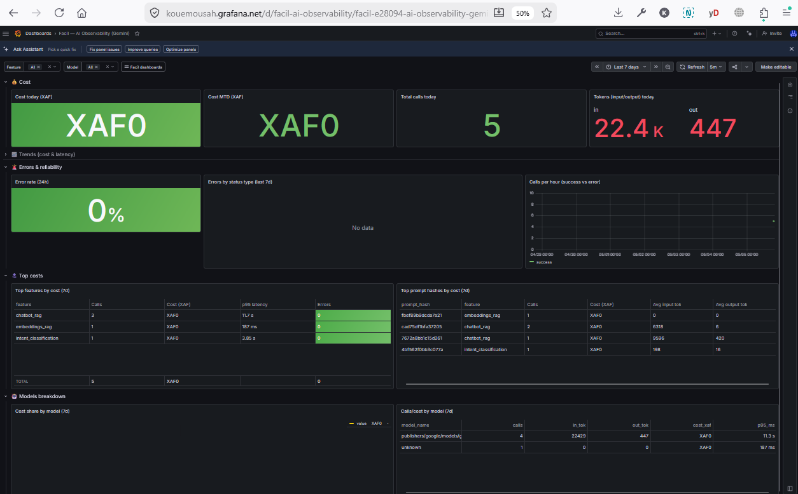
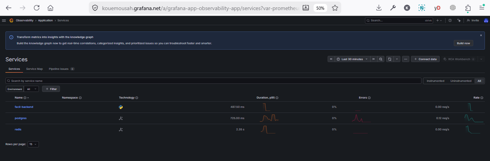
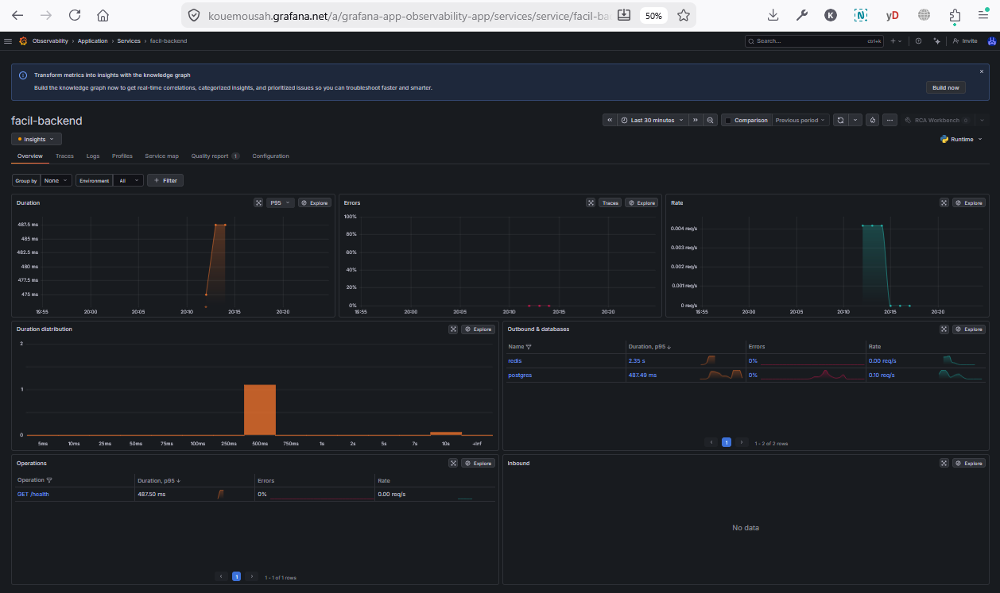
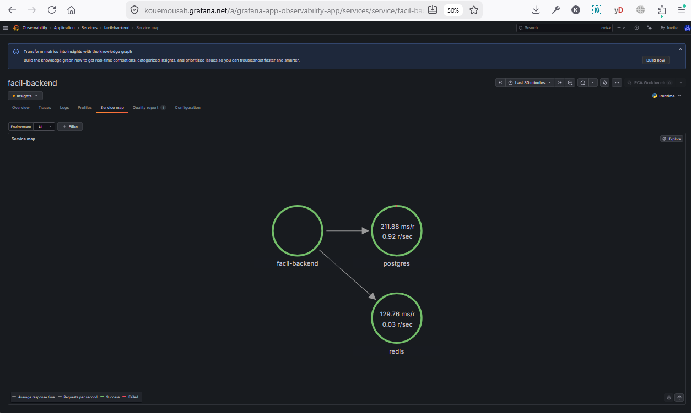
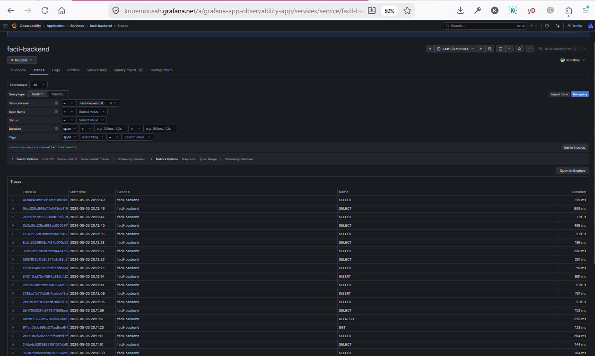

AI Observability — Gemini cost & latency tracking
Per-call telemetry on every Gemini / Vertex AI request made by the Facil backend. 18 call sites instrumented across 16 features (chatbot RAG, OCR, classification, enrichment, routing, briefing, etc.). Outputs: 1 Grafana dashboard with 12 panels + 3 alert rules + a BD-persisted audit trail (ai_call_metrics table, mig 325). Privacy-safe by design: no raw prompt content stored, only SHA-256 truncated hashes.
- 1. Why & Gap analysis
- 2. Stack & double-write design
- 3. BD schema (mig 325)
- 4. Wrapper API (traced_generate_sync)
- 5. Feature labels (16 mappings)
- 6. Dashboard (12 panels)
- 7. Alerts (3 rules + runbooks)
- 8. Privacy & security
- 9. Coexistence with VertexAIManager
- 10. Phase B — Backend APM (full instrumentation)
1. Why & Gap analysis #
Before this work, the backend made ~17 distinct Gemini call sites (RAG chat, embeddings, OCR, classification, enrichment, routing, briefing, agent decisions, supervisor tools, etc.) with zero observability. We could not answer 4 critical operational questions:
- Cost: how much do we spend in tokens per day, per model, per feature?
- Latency: what is the p95/p99 by call type (RAG vs OCR vs classification)?
- Reliability: what is the failure rate, and what type (rate-limit / timeout / JSON parse / content blocked)?
- Optimization: which prompts cost the most? Are there quick wins?
2. Stack & double-write design #
Each call goes through a single wrapper traced_generate_sync() that emits both an OTEL span (to Grafana Tempo for trace drill-down) and a row in the ai_call_metrics BD table (long-term cost reporting + Grafana dashboard panels). Two writes, two consumers:
e.g. chatbot RAG
app/core/ai_telemetry.py
Vertex AI sync via run_in_executor
→ Grafana Tempo (14d retention)
→ ai_call_metrics (BD persistent)
Why both? Tempo Free tier has 14-day retention — insufficient for monthly cost reports. The BD is the source of truth for long-term aggregation; Tempo provides drill-down debug (find the exact span of a given trace_id). Both writes are fire-and-forget via asyncio.create_task — never block the user-facing call.
3. BD schema (mig 325) #
Table ai_call_metrics (20 columns, 8 indexes, 9 CHECK constraints):
| Column | Type | Purpose |
|---|---|---|
id, timestamp, created_at | bigserial, timestamptz | Primary key + ingestion time |
trace_id, span_id | text (16/32 hex regex) | OTEL correlation with Tempo |
provider, model_name, operation | text (enums) | gemini | vertex_embedding × chat | embeddings | completion |
feature, user_id, user_role | text, uuid, text | Facil context (chatbot_rag / ocr / etc.) |
input_tokens, output_tokens, total_tokens | int (GENERATED) | Usage counters; total_tokens auto-computed |
cost_xaf | numeric(14, 6) | Estimated FCFA cost (input × pricing.input + output × pricing.output) |
latency_ms, finish_reason, status, error_class | int, text, text, text | end-start ms + 6-status enum (success / error / rate_limited / timeout / content_blocked / json_parse_error) |
prompt_hash | text (16 hex regex) | SHA-256 truncated — privacy-safe identifier (no reverse mapping) |
Two rollup views power the dashboard panels: v_ai_cost_daily (90 days, per-day per-feature per-model) and v_ai_cost_hourly (7 days, finer for spike detection alerts). Both granted to looker_readonly (mémoire règle #38: auto-wrapper VIEW au boot).
4. Wrapper API #
Module app/core/ai_telemetry.py exposes 4 wrappers:
| Function | When to use | Signature shape |
|---|---|---|
traced_generate_sync | Sync model.generate_content() + run_in_executor. Most common pattern in this codebase. | await traced_generate_sync(model, prompt, *, feature, **gen_kwargs) |
traced_generate | Async generate_content_async() if SDK supports it | await traced_generate(model, prompt, *, feature, **kwargs) |
traced_embed_sync | Sync model.get_embeddings() | await traced_embed_sync(model, texts, *, feature) |
traced_embed | Async embeddings | await traced_embed(model, texts, *, feature) |
Design principles: (1) soft OTEL import — module loads without opentelemetry-sdk; spans become no-ops; BD persist still runs. (2) BD persist never blocks — asyncio.create_task + try/except; a BD outage cannot crash the chatbot. (3) privacy by construction — prompt content never stored, only the 16-char SHA-256 hash. RGPD-safe.
5. Feature labels (16 mappings) #
Each call site is tagged with a feature string used for cost/latency segmentation in the dashboard:
| Feature | Module | Volume |
|---|---|---|
chatbot_rag | chatbot/services/gemini_service.py | High |
embeddings_rag | chatbot/services/embedding_service.py | Very high |
intent_classification | chatbot/services/gemini_service.py | High |
ocr | service_requests/services/gemini_document_processor.py | Very high |
enrichment | enrichment/services/enrichment_service.py | Low (cron) |
routing | assignment/services/llm_routing_service.py | Medium |
briefing | agents/services/llm_briefing_service.py | Low |
classification_batch | batch_requests/services/document_classifier.py | Medium (sporadic) |
analyst_treasury, analyst_base (×4) | service_requests/.../treasury_analyst_service.py + shared/.../base_analyst_service.py | Low |
agent_decision, agent_mixin (×2) | shared/services/agent_decision_tools.py + llm_agent_mixin.py | Medium |
supervisor_tools | shared/services/supervisor_tools.py | Low |
6. Dashboard #
UID: facil-ai-observability. 12 panels across 5 row sections. Listed at /admin/dashboards under category "security" (rls_mode admin_only). Open in new tab from the listing (Grafana Cloud Free blocks iframe embedding — see Grafana docs §7).

- 💰 Cost: today XAF, MTD XAF, total calls today, tokens in/out today (4 stat panels)
- 📈 Trends: cost stacked by feature per day, p95 latency per feature per hour (2 timeseries)
- 🚨 Errors: 24h error rate %, errors by status type bar chart, success-vs-error per hour stacked area (3 panels)
- 🔝 Top costs: top features by cost (7d), top prompt_hashes by cost (7d) — identifies dedup / optimization candidates (2 tables)
- 🤖 Models breakdown (collapsed): cost share donut + per-model table (2 panels)
7. Alerts #
| Rule | Threshold | Severity | For |
|---|---|---|---|
| facil-ai-cost-spike | SUM(cost_xaf) today > 5000 XAF | warning | 5min |
| facil-ai-error-rate | error_rate(5m) > 10% | critical | 5min |
| facil-ai-p95-latency | p95(15m) > 8000ms | warning | 10min |
Runbook — Cost spike
1. Open the dashboard, drill into "Top features by cost (7d)". 2. Identify the dominant feature. 3. Check "Top prompt hashes by cost (7d)" for duplicate expensive prompts (caching candidate). 4. If routing/briefing/enrichment cron is the culprit, throttle frequency. 5. If chatbot_rag explodes, suspect a bot or agent looping — check audit_logs for rapid-fire requests from one user_id.
Runbook — Error rate spike
1. Open "Errors by status type (last 7d)". 2. rate_limited → Vertex AI quota hit, increase via Google Cloud Console. 3. timeout → check Gemini API status page; consider raising asyncio.wait_for timeout. 4. content_blocked → SAFETY filter triggered, review prompt template. 5. json_parse_error → mémoire règle #21: ensure response_mime_type="application/json" in GenerationConfig.
Runbook — p95 latency degraded
1. Check "p95 latency by feature" panel. 2. If ocr spikes, suspect large PDFs — verify document_processing_queue isn't backlogged. 3. If chatbot_rag spikes, check pgvector search latency (separate Postgres metrics). 4. If all features spike together, suspect Vertex AI region-wide degradation — check Google Cloud Status.
8. Privacy & security #
- No raw prompt content stored anywhere. Only SHA-256 truncated 16-char hash. No reverse-mapping table. RGPD-safe by design.
- prompt_hash format enforced by BD CHECK
chk_aim_prompt_hash_format:^[a-f0-9]{16}$ - user_id FK ON DELETE SET NULL — user deletion clears the link without deleting the audit row
- OTLP token via Secret Manager (
grafana-otlp-token) — CAP token scoped totraces:writeonly, never exposed in YAML descriptors - RLS: dashboard
rls_mode='admin_only'— non-admins don't see cost data even via/api/v1/dashboards/reports-config
9. Coexistence with VertexAIManager #
The existing app/modules/shared/services/vertex_ai_manager.py singleton (in-memory token counters + circuit breaker) is INTENTIONALLY preserved. The two systems are complementary, not redundant:
| Concern | VertexAIManager | ai_call_metrics |
|---|---|---|
| Circuit breaker (10 fail/60s cooldown) | ✅ | ❌ |
| Sub-μs in-memory stats read | ✅ | ❌ |
| BD persistence (cross-worker, survives restart) | ❌ | ✅ |
| Cost in XAF | ❌ | ✅ |
| Per-feature/model/user/trace tags | ❌ | ✅ |
| Status enum (6 values) | ❌ | ✅ |
Call site pattern: await traced_generate_sync(...) followed by VertexAIManager().track_usage(response, "X") + track_success(). Both calls coexist; neither blocks the other.
10. Phase B — Backend APM (full instrumentation) #
Phase A instrumented only the 18 Gemini call sites. Phase B (2026-05-05) extends the OTEL coverage to the entire FastAPI backend via auto-instrumentation packages — every HTTP request, every asyncpg query, every httpx external call, every Redis op becomes a span. This unlocks Grafana Cloud's Application Observability feature (RED metrics + service map auto-derived from Tempo spans).
What gets instrumented
| Layer | OTEL package | Spans created |
|---|---|---|
| HTTP server | opentelemetry-instrumentation-fastapi | Parent span per HTTP request (method, path, status, duration). Excludes /healthz, /metrics, /static/* to keep volume sane. |
| Postgres | opentelemetry-instrumentation-asyncpg | Span per query (statement, parameters redacted, duration). Identifies slow queries and lock contention. |
| HTTP client | opentelemetry-instrumentation-httpx | Span per outgoing call to Vertex AI / BANGE / Firebase / Grafana API. URL + status + latency. |
| Redis | opentelemetry-instrumentation-redis | Span per cache op (GET, SET, DEL, etc.). Identifies cold cache or hot keys. |
Sampling policy: 100% (zero sampling)
User decision 2026-05-05: no sampling — instrument everything. Trade-off: full visibility on 100+ concurrent agent traces and bundle workflow debug, at the cost of higher Tempo ingestion (50GB/month free tier). If quota saturates, drop to 25% head-sampling on HTTP via TraceIdRatioBased sampler in main.py; keep 100% on AI calls (low volume) and errors (always sample).
Activate Application Observability in Grafana
After the next deploy emits the first instrumented spans (~5 min):
- Open grafana-app-observability-app/landing
- Click Activate Application Observability
- Select the Tempo data source (default:
grafanacloud-kouemousah-traces) - Wait 5-10 min for the auto-derivation pipeline to bootstrap. Service map appears under Observability > Application.
Expected service map (live capture)
[client]
└─ facil-backend (FastAPI)
├─ Postgres (Supabase pooler)
├─ Redis (Upstash)
├─ Vertex AI / Gemini (gen_ai.* spans from Phase A)
├─ Firebase Storage (signed URL generation)
├─ Grafana API (admin/grafana/discover)
└─ BANGE webhook (payment validation)
facil-backend (Python, p95 487.5ms), postgres (asyncpg, p95 725ms, rate 0.12 req/s), redis (cache, p95 2.35s — note: high p95 indicates rare slow operations). 0% errors across the board.

GET /health at p95 487.5ms (excluded from telemetry middleware but still gets a FastAPI span); Outbound & databases shows the call graph to Redis (2.35s p95) and Postgres (487ms p95).

asyncpg + redis instrumenter spans). facil-backend calls Postgres at 211.88 ms/req (0.92 r/sec) and Redis at 129.76 ms/req (0.03 r/sec). Vertex AI / Firebase / BANGE will appear as additional nodes once those httpx calls fire (low-frequency operations).

resource.service.name="facil-backend"). 20 most recent traces shown — mostly SELECT (101–906 ms), one INSERT (981 ms), one REFRESH (599 ms — this is the request-telemetry-cleanup cron MV refresh from Phase C.2). Click any trace_id to drill down into the full span tree (FastAPI route → asyncpg query → result).
Concrete benefits
- Bundle workflow debug — trace a single
service_request_idacross web → backend → 5 entity locks → BANGE → email → vault, end-to-end in one click - BD lock contention — heatmap of slow asyncpg queries surfaces deadlocks before users notice
- Deployment regression — p95 latency by endpoint pre/post deploy; revert decision in 30s
- Auto anomaly detection — Grafana Knowledge Graph correlates spike + deploy + slow query without manual digging